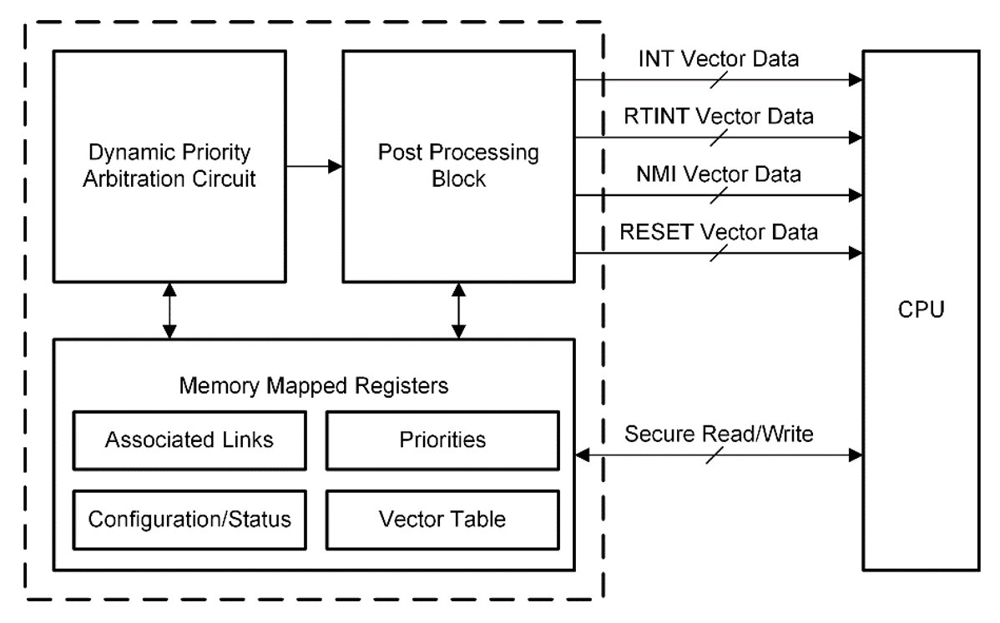
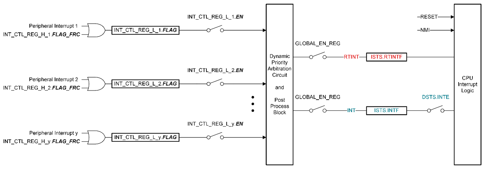

Interrupts#
Overview#
In this module, you will:
Follow the flow of interrupt processing through the PIPE and CPU modules.
Understand how PIPE is commonly used with peripherals.
Learn about software configurations needed to utilize interrupts.
Introduction#
An interrupt is a response by the processor to an event that needs attention. The processor executes instructions that are defined within the interrupt service routine (ISR) as soon as is capable, and then goes back to normal operational tasks. Unlike idle loops where code waits for an event to occur, interrupts provide the opportunity to have non-idle code loops that execute based on the CPU’s availability and priority of tasks.
C29x Interrupt Architecture#
C29x CPU architecture allows three types of interrupts based on the importance of the interrupt and corresponding response time needed: NMI (Non-Maskable Interrupt), RTINT (Real Time Interrupt), and INT (Low Priority Interrupt). Each type allows system events of corresponding urgency level and importance to be separated in respective sets. In order of importance, RTINTs are serviced with lower latency including automated context save & restore while INTs are handled in a regular fashion by software. As devices will hundreds of events categorized into these two types of interrupts two sets, multiple events cannot be addressed by CPU simultaneously.
PIPE provides the mechanism to register every event and send interrupts to the CPU in prioritized order. The application can select which interrupts will be connected to CPU through PIPE and allocate priority for each of those interrupt lines. C29x CPU upon receiving an interrupt signal, acknowledges when ready, reads ISR vector address, and executes the ISR. Through this execution, it handshakes with the PIPE which will be described in detail in the following sections.
Peripheral Interrupt and Priority Expansion (PIPE)#
Application of PIPE#
C2000 Devices used for real time control applications have need of growing number of peripherals with requirement of one or more interrupt lines each. These interrupts have varying level of response time and level of tasks expectations. With the interrupts with shortest response time required for time critical tasks prioritized. There is a significant need to aggregate these larger number of interrupts into fewer ones which are really utilized by a particular application and the related CPU on the device.
Why use PIPE?#
PIPE is a widely-used peripheral in most if not all systems. Some key advantages are:
Hardware support for interrupt prioritization, arbitration, grouping, software hand-shake, and nesting.
Link-based protection to ensure only legal code from an assigned interrupt owner services an interrupt.
Automatic context save and restore for RTINT and NMI.
With a general overview of PIPE use established, we can get into what PIPE is and how it works.
What is PIPE?#
How does PIPE work?#
The PIPE module arbitrates peripheral interrupts across the device each clock cycle, with the highest priority interrupt asserted to the corresponding CPU interrupt line (NMI, RTINT, or INT). Along with arbitration, the PIPE takes care of configurations related to interrupt ordering, hardware nesting, and more.


Figure 1: PIPE Block Diagram#
Interrupt Propagation#
Interrupts propagate from the peripheral through the PIPE to the CPU. At the PIPE module, interrupts are arbitrated and asserts based on their priority.The following diagram showcases the steps for interrupts asserted on the INT and RTINT (connected through PIPE) and NMI and RESET (connected directly to the CPU).


Figure 2: Interrupt Propagation Diagram#
Interrupt Configuration#
PIPE Block Initialization#
Two separate functions are called to initialize the interrupt module and PIPE block.
Interrupt_initModule();
Interrupt_initVectorTable();
During processor initialization, the interrupt vectors, as mapped in the PIPE interrupt mapping table, are copied to the PIPE RAM and the PIPE module is enabled by setting EN to ‘1’.
When the CPU receives an interrupt, the vector address of the ISR is fetched from the PIPE RAM, and the interrupt with the highest priority that is both flagged and enabled is executed.
Priority is determined by the location within the interrupt vector table. The lowest numbered interrupt has the highest priority when multiple interrupts are pending.
PIPE Initialization Dependencies#
After the device is reset and execution of the boot code is completed, the selected boot option determines the code entry point.
The CodeStartBranch.asm file has a long branch instruction to the entry point of the runtime support library. After the runtime support library completes execution, main is called.
In main, a function is called to initialize the interrupt process and enable the PIPE module.
When the CPU receives an interrupt, the vector address of the ISR is fetched from the PIPE RAM, and the interrupt with the highest priority that is both flagged and enabled is executed.
At power-up, all interrupts are in the reset conditions. By default:
All interrupts are disabled.
All interrupts configurations and related links are set to default values.
All interrupts are assigned as INT by default and interrupt vectors point to default NMI vector.
Interrupts are configured as follows:
Disable INT and RTINT: Disable INT and RTINT using the GLOBAL_EN_REG.ENABLE/KEY bits.
Prioritization: Set the interrupt priority (optional).
Nesting: Set the group (optional).
Context: Set the context ID (optional).
Stack protection: Set stack pointer warning levels (RTINT_SP_H).
Enable interrupts: Enable specific interrupts using INT_CTL_REG_L_y.EN bit for each interrupt.
Enable INT and RTINT: Enable INT and RTINT using the GLOBAL_EN_REG.ENABLE/KEY bits. Enable PIPE Global Interrupt (for INTs and RTINTs) and INT enable in the CPU.
ENINT;
Interrupt_enableGlobal();
Interrupts Prioritization#
Priority is determined for each interrupt using:
User-configured interrupt priority
Index-based fixed interrupt priority
User-Configured Interrupt Priority User-configured interrupt priority is configured in software by the user. The lower the priority level (higher the value of the PRI_LEVEL), the higher the priority is of the interrupt. Unless specifically configured, every interrupt is configured to the lowest priority level by default.
Index-Based Fixed Interrupt Priority Index-based fixed interrupt priority is based on the input number where a particular interrupt is connected to the PIPE. Also known as the “interrupt index”, this indexing is used to configure interrupts in the PIPE. The PIPE Channel Mapping table lists all the peripheral interrupt channels per device.
Interrupt Response and Latency#
Interrupt latency is an important factor in understanding the response time of a real-time system. The typical method by which interrupt latency of a system is assessed is the number of cycles it takes for the hardware to respond to an interrupt and branch to the interrupt vector (hardware latch and respond).
Exact number of cycles for INT and RTINT minimum vs. maximum latency is dependent on the device and CPU architecture.
Safety & Security#
The CPUs and PIPE has protection mechanisms to provide safety and security for the interrupt architecture. The Safety and Security Unit (SSU) protected RTINT stack prevents stack overflow during nesting requested by the PIPE module and covers other overall software security. In addition, all PIPE registers have ECC or parity protection.
Test Your Knowledge!#
Question 1
In order of highest to lowest priority, what lines are used to propagate interrupts to the CPU?
Answer
NMI (Non-Maskable Interrupt), RTINT (Real-Time Priority Interrupt), sand INT (Low/Regular Priority Interrupt) lines.
Question 2
How are the nesting and groups features related?
Answer
By default, a higher priority interrupt can nest within a lower priority interrupt. PIPE can also prevent interrupts from nesting within other interrupts using “groups”.
Summary#
The key takeaways from this learning module are:
PIPE arbitrates peripheral interrupts across a device.
The highest priority interrupt is asserted to the appropriate CPU interrupt line (NMI, RTINT, or INT) each clock cycle.
PIPE allows for configurable ordering of interrupts and groups and hardware nesting.